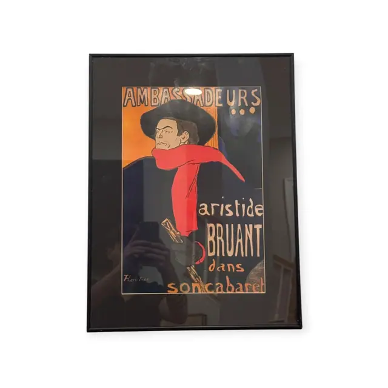
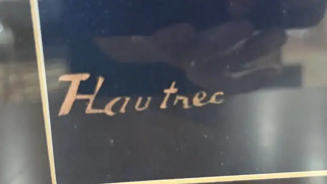

Paintings & Prints
Ambassadeurs Aristide Bruant Poster, HLautrec, Signed, Framed, 1892
HLautrec · design 1892; this impression later 20th century
Price Upon Request


About the Item
HLautrec. Bruant stands three-quarter length in a wide-brimmed black hat and black cape, his long red scarf swinging across the body as the single note of colour. Behind him an orange panel carries the word 'AMBASSADEURS' in heavy outlined capitals with three dots, and a shadowy black silhouette of a second figure crosses the deep navy ground at the left. Below, brush-lettered text reads 'aristide BRUANT dans son cabaret'. The design is built from broad flat areas of navy, orange, black and red with a bold contour line throughout. Medium: colour lithograph poster (later printing or reproduction). Signed lower left, printed within the design, in gold on the dark ground, reading "HLautrec". Inscribed on the reverse or mount: AMBASSADEURS; aristide BRUANT; dans son cabaret; HLautrec. Condition: Heavy reflection across the glass including the photographer; the dark ground makes surface condition hard to judge. No visible tears.
Details
- Creator:
- HLautrec
- Creation Year:
- design 1892; this impression later 20th century
- Dimensions:
- Height: 21.75 in (55.24 cm)
Width: 16.25 in (41.27 cm)
outside of frame - Medium:
- colour lithograph poster (later printing or reproduction)
- Period:
- 19Th
- Condition:
- Offered in the condition shown in the photographs.
- Reference Number:
- VO-85
- Documentation:
- no certificate photographed
- Gallery Location:
- AMBASSADEURS; aristide BRUANT; dans son cabaret